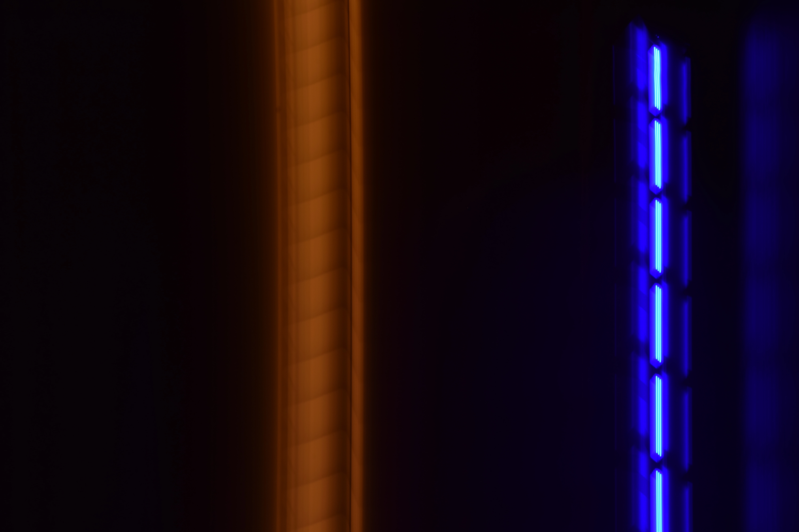
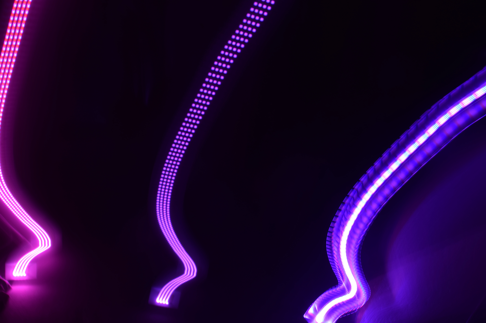
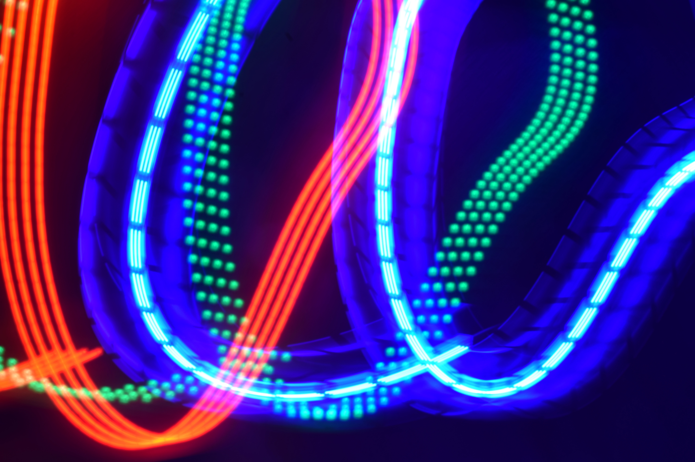
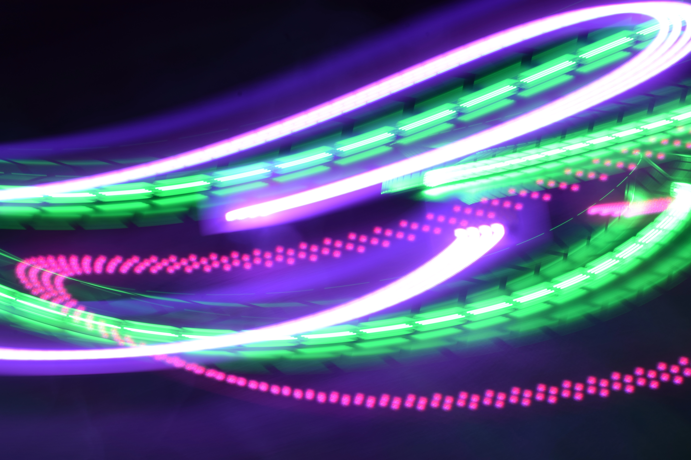
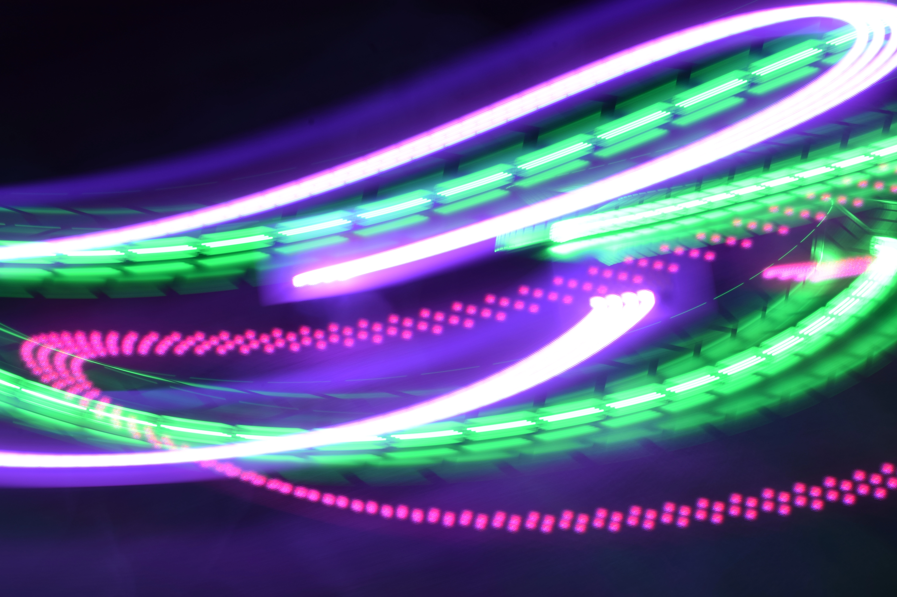
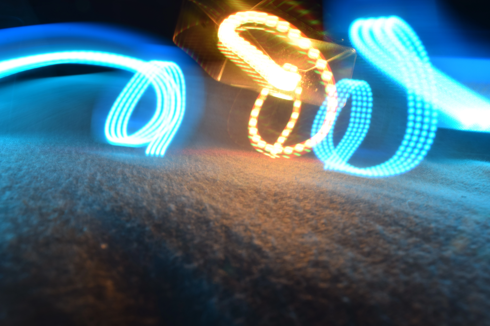
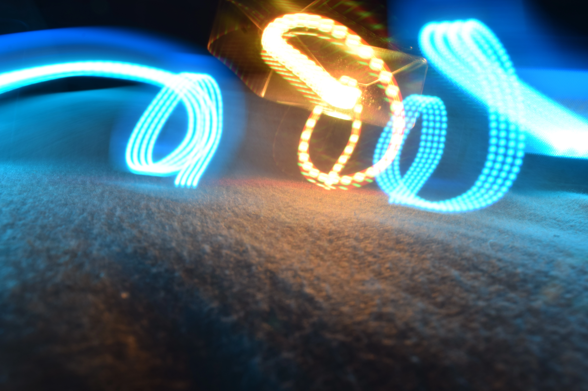

Flowing Colors
15-12-2022
Laatst bewerkt op: 15-12-2022
In deze fotoserie ben ik verder gaan experimenteren met lange sluitertijd en licht. Dit keer ben ik binnen gebleven zodat ik meer controle had over het licht en over de vormen die het licht maakt. De gekleurde strepen zijn bijna geometrisch, en zorgen voor een abstract beeld.
De serie
   

 
